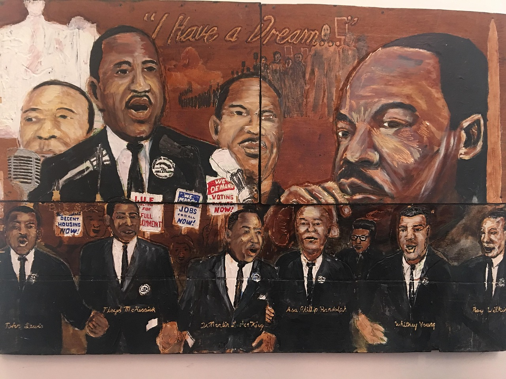
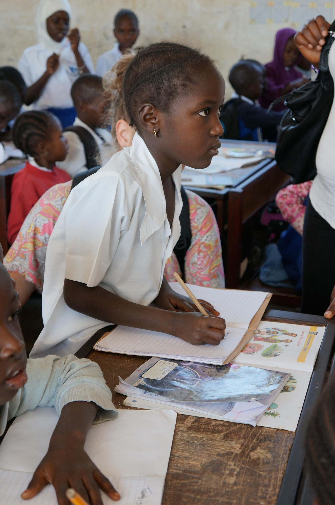

Sankofa es un proyecto divulgativo nacido de una urgencia histórica: recuperar aquello que fue negado, silenciado o fragmentado en la experiencia de la Diáspora Africana. Trabajamos desde un enfoque ontológico y epistemológico porque entendemos que la dominación no solo opera sobre los cuerpos, sino también sobre las formas de conocer, nombrar y existir en el mundo.

Sankofa existe para fortalecer la conciencia colectiva de la Diáspora Africana, articulando memoria, resistencia y conciencia de clase. Cuestionamos los relatos hegemónicos que reducen lo afro a folklore, marginalidad o excepción, y apostamos por una lectura estructural del racismo como tecnología del capitalismo colonial.
Nuestro trabajo se sitúa en el cruce entre memoria histórica y disputa del relato, panafricanismo y lucha de clases, producción cultural y pensamiento político.
No buscamos representar a la diáspora como objeto de estudio, sino hablar desde ella, con una voz propia, situada y sin concesiones.

Entendemos que todo conocimiento es político. Sankofa no pretende ser un espacio aséptico ni conciliador: asumimos una posición crítica frente al colonialismo, el racismo estructural y las formas contemporáneas de explotación.
Nombramos las violencias, señalamos las continuidades históricas y reivindicamos la dignidad de los pueblos afrodescendientes como sujetos históricos y políticos.
Volver al origen no es retroceder. Es avanzar con memoria.

Sankofa no se limita al espacio digital. Nuestras aspiraciones apuntan a la construcción de espacios permanentes de pensamiento afro dentro de la academia — idealmente en cada universidad — donde el conocimiento producido por y para la Diáspora Africana deje de ser marginal.
Creemos en la necesidad de disputar el canon académico, abrir grietas en sus estructuras eurocéntricas y fomentar comunidades de estudio, investigación y debate que articulen historia, filosofía, ciencia y política desde perspectivas afrocentradas y de clase.
Al mismo tiempo, apostamos por la materialización del pensamiento. Libros, revistas, periódicos, indumentaria — la producción material es parte de nuestra estrategia para sacar el pensamiento crítico del aula cerrada y llevarlo a la calle, al cuerpo y a la vida cotidiana.
 Sankofa
Sankofa